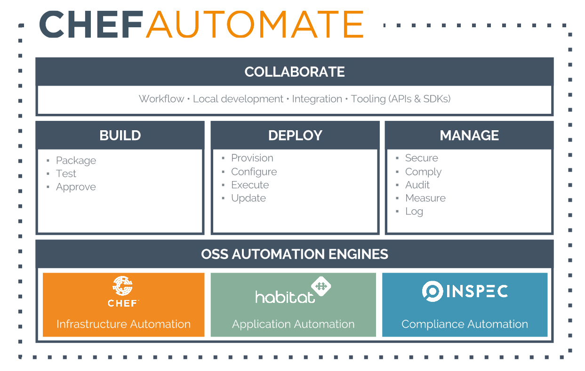

InSpec
forge compliance into automation
The Chef universe
- What is InSpec?
- Compliance profiles
- Continuous Compliance
DevOps Transformation
The promise of the coded business

Step #1: Codify your tech
template '/etc/ssh/sshd_config' do
source 'opensshd.conf.erb'
mode '0600'
owner 'root'
group 'root'
variables(
mac: SshMac.get_macs(node),
kex: SshKex.get_kexs(node),
cipher: SshCipher.get_ciphers(node),
...
Why infrastructure testing?
Code breaks
normal accident theory


Why infrastructure testing?
1. Reduce the number of defects
2. Security and Compliance testing
Regulatory compliance
| PCI-DSS | Gramm-Leach-Bliley Act | HIPAA |
| Dodd-Frank | ISO | Sarbanes-Oxley |
| HITECH | Grundschutz | European Central Bank Regulations |
- Processes
- Data storage / processing
- Configuration
- Vulnerability handling
Security meets operations


Documentation
SSH supports two different protocol versions. The original version, SSHv1, was subject to a number of security issues. Please use SSHv2 instead to avoid these.
Scripting tools
> grep "^Protocol" /etc/ssh/sshd_config | sed 's/Protocol //'
2
Testing a requirement
describe sshd_config do
its('Protocol') { should cmp 2 }
end
InSpec
Compliance language
control 'ssh-1234' do
impact 1.0
title 'Server: Set protocol version to SSHv2'
desc "
Set the SSH protocol version to 2. Don't use legacy
insecure SSHv1 connections anymore...
"
describe sshd_config do
its('Protocol') { should eq('2') }
end
end

 One language
One language
- Linux, Windows, BSD, Solaris, AIX, ...
Windows
control 'windows-base-201' do
impact 1.0
title 'Strong Windows NTLMv2 Authentication Enabled; Weak LM Disabled'
desc '
@link: http://support.microsoft.com/en-us/kb/823659
'
describe registry_key('HKLM\System\CurrentControlSet\Control\Lsa') do
it { should exist }
its('LmCompatibilityLevel') { should eq 4 }
end
end
One language
- Linux, Windows, BSD, Solaris, AIX, ...
- Bare-metal, VMs, Containers
Test your local node
inspec exec profile
Test remote via SSH
inspec exec profile -i vagrant.key -t ssh://root@172.17.0.1:11022
Test remote via WinRM
inspec exec profile -t winrm://Admin@192.168.1.2 --password super
Test Docker Container
inspec exec profile -t docker://3cc8837bb6a8
One language
- Linux, Windows, BSD, Solaris, AIX, ...
- Bare-metal, VMs, Containers
- Nodes, DBs, Endpoints, APIs (Azure, ...)
DB testing
describe mysql_session.query("SELECT user, host FROM mysql.user WHERE host = '%'") do
its(:stdout) { should be empty }
end
Cloud testing
security_groups.each do |security_group|
describe security_group do
it { should_not have_inbound_rule().with_source('0.0.0.0/0') }
end
end
- What is InSpec?
- Compliance profiles
- Continuous Compliance
CIS and SCAP
Benchmark for Compliance
- Red Hat Enterprise Linux, Ubuntu, SUSE, Oracle Linux, ...
- Microsoft Windows 7, 8, Server 2008, 2012
- IBM AIX, HP-UX, VMware ESXi
- Oracle MySQL, Apache Tomcat, MS SQL Server, MS IIS
Written in XML
Set SSH Protocol to 2
CentOS Linux 6
Set SSH Protocol to 2
/etc/ssh/sshd_config
^\s*Protocol\s+(\S+)\s*(?:#.*)?$
1
Source and Copyright: Center for Internet Security
Converted to InSpec
control "xccdf_org.cisecurity.benchmarks_rule_6.2.1_Set_SSH_Protocol_to_2" do
title "Set SSH Protocol to 2"
desc "SSH supports two different and incompatible protocols: SSH1 and SSH2. SSH1 was the original protocol and was subject to security issues. SSH2 is more advanced and secure."
impact 1.0
describe file("/etc/ssh/sshd_config") do
its(:content) { should match /^\s*Protocol\s+(\S+)\s*(?:#.*)?$/ }
end
file("/etc/ssh/sshd_config").content.to_s.scan(/^\s*Protocol\s+(\S+)\s*(?:#.*)?$/).flatten.each do |entry|
describe entry do
it { should eq "2" }
end
end
end
Native InSpec
control "xccdf_org.cisecurity.benchmarks_rule_6.2.1_Set_SSH_Protocol_to_2" do
title "Set SSH Protocol to 2"
desc "SSH supports two different and incompatible protocols: SSH1 and SSH2. SSH1 was the original protocol and was subject to security issues. SSH2 is more advanced and secure."
impact 1.0
describe sshd_config do
its('Protocol') { should cmp 2 }
end
end
Silo-breaking
- Build foundation for communication
- Share knowledge and code
- Codify agreements
Profile foundation

Make adjustments

Spread to other environments

- What is InSpec?
- Compliance profiles
- Continuous compliance
Create new artifacts

To reach production

Continuous workflow
Create and test early on
Test continuously
Deploy, Operate, Verify
Continuous workflow

Safety at Velocity
- Risk reduction when constantly changing your systems
- As part of the workflow. Not after, not later.
- Test for quality, Test for compliance